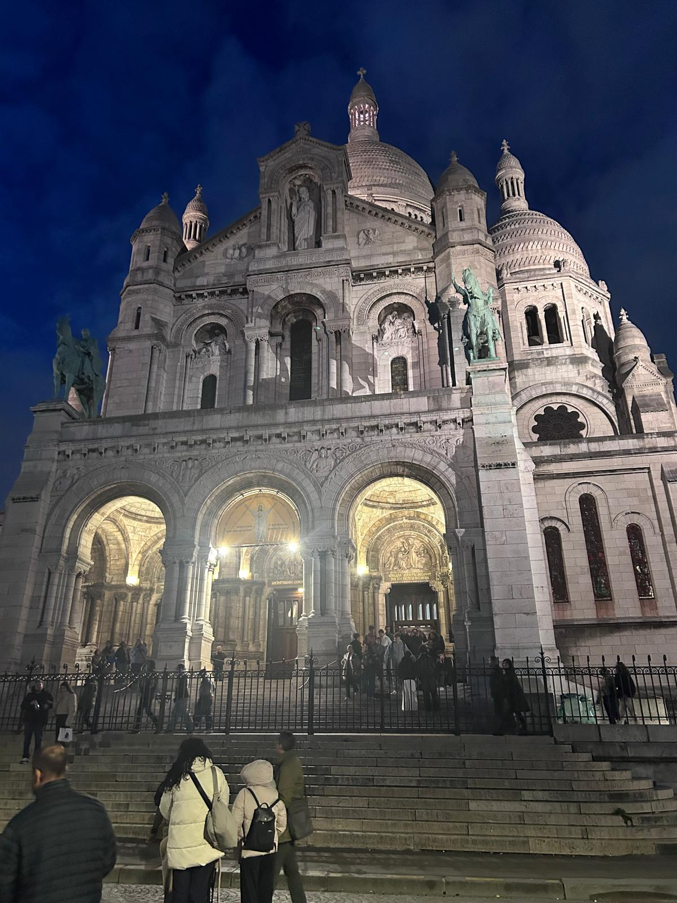
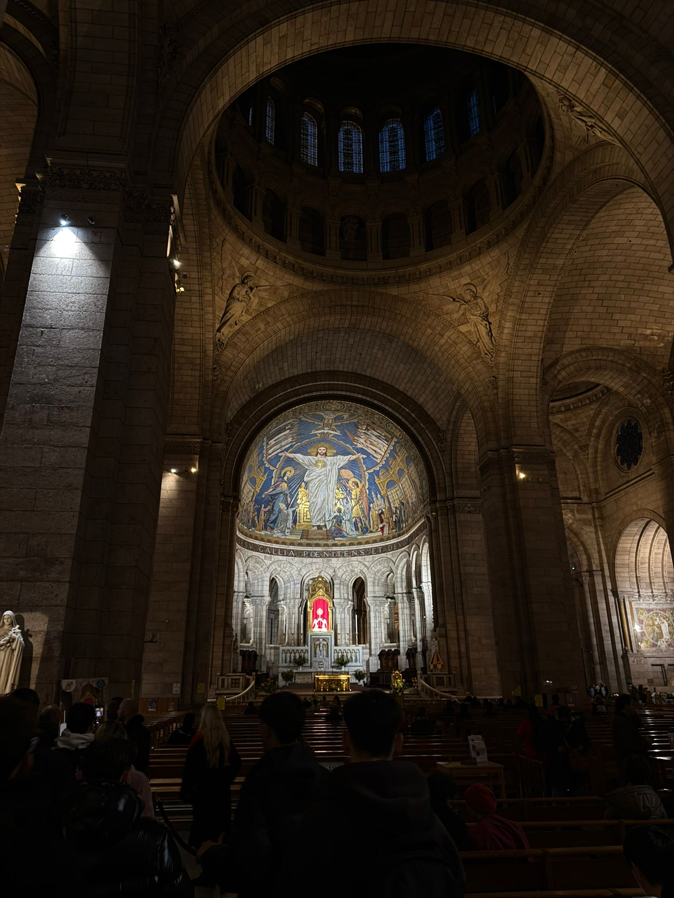

Facade and Staircase
Scenic entrance with views over Paris. Equestrian statues of Joan of Arc and Saint Louis IX at the portals.
Montmartre from above: sacred art, panorama and civic memory in one of Paris’s most iconic places.
The Basilica of the Sacred Heart was built between the late 19th and early 20th centuries, designed by Paul Abadie, as a symbol of peace and rebirth after the Franco-Prussian War and the Paris Commune. Its Roman-Byzantine style and limestone that whitens with rain give it a bright and unique appearance. From the dome, over 80 meters high, you can admire one of the most beautiful panoramas of Paris, while inside the large mosaic of Christ in Glory celebrates the city’s faith and hope.
Short route 1–2 hours • Perfect for groups

Scenic entrance with views over Paris. Equestrian statues of Joan of Arc and Saint Louis IX at the portals.

The large mosaic of Christ in glory dominates the apse: symbols, colors and guided interpretation of the work.

360° view (300 steps): urban orientation and monument recognition activities.
Staircase → Facade → Interior/Mosaic → Dome → Final viewpoint